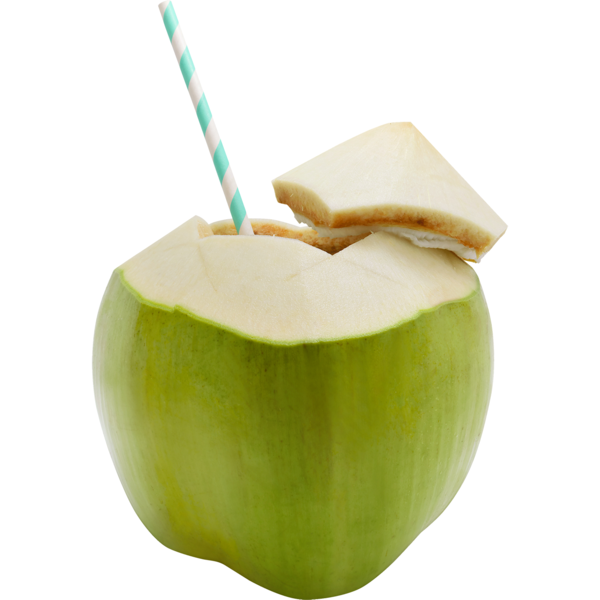

click here Done if youre Cooking »
buko
Photo Reference Link

Ingredients
2 fresh buko 5 kilo ice
Guide How To make buko juice
first scrape the white buko then put it on your cup then pour the juice in the cup then put 1 teaspoon sugar and stir it after that pour ice of the cup,Youre Done